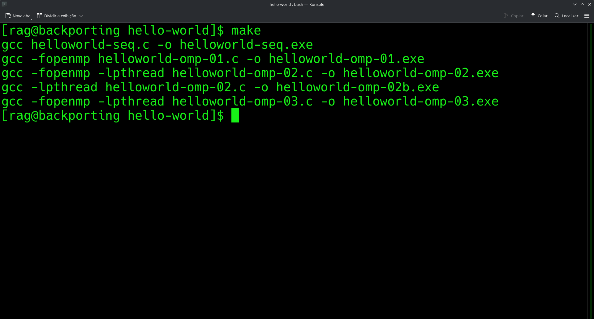
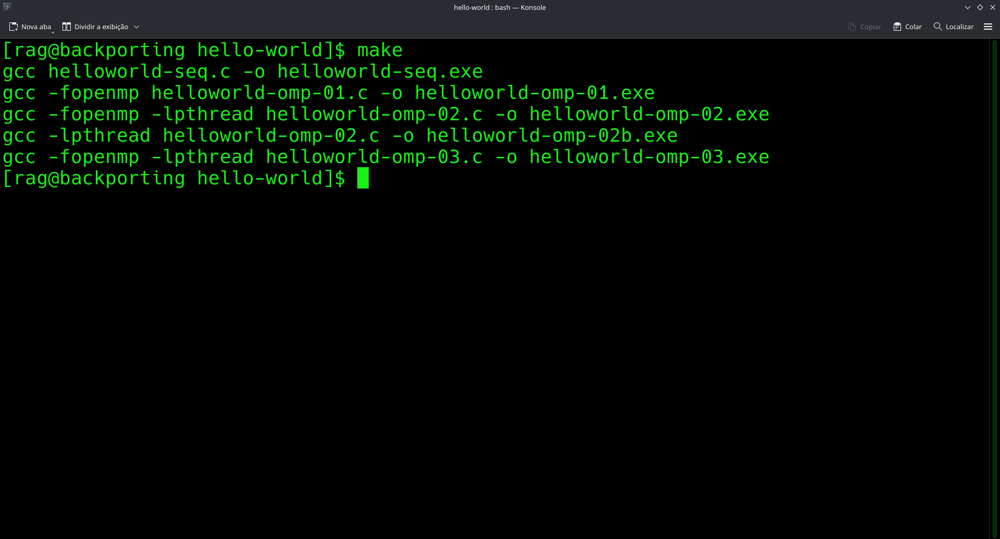
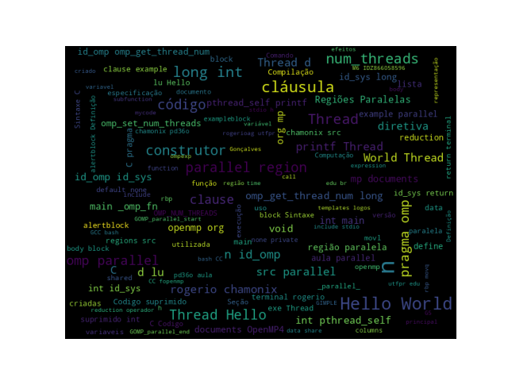

4 Diretivas de Compilação para Regiões Paralelas
Resumo: Regiões Paralelas são fundamentais para a execução de aplicações no contexto de Computação Paralela. Nessas regiões que o fluxo de execução principal da aplicação se divide entre mais threads e o paralelismo na execução de tarefas pode ser alcançado. Neste material apresentamos a Diretiva de Compilação para Regiões Paralelas, a diretiva parallel e as cláusulas que podem ser utilizadas. O objetivo é testar os efeitos da utilização da diretiva na criação de regiões paralelas, nas quais um time de threads é criado para a execução do código da região, e verificar os efeitos causados com a aplicação das cláusulas. Na prática desse capítulo, o objetivo é percebermos a redução da quantidade de código com o uso de diretivas de compilação. O estudo do código desse exemplo de soma de vetores, um exemplo simples, ajuda a percebermos a quantidade de código necessária para a criação das threads.
4.1 Introdução
Vamos explorar a diretiva de compilação com o construtor para Regiões Paralelas (parallel) e as cláusulas admitidas por ele1. Testando os efeitos das cláusulas.
Este é um dos construtores mais importantes do OpenMP, pois ele é responsável pela demarcação de regiões paralelas, indicando a região de código que será executada em paralelo pelas threads.
4.2 Diretivas de Compilação para Regiões paralelas: construtor parallel
Quando uma região paralela é encontrada pela thread principal (master), é criado um time de threads que irão executar o código da região paralela. Se esse construtor não for especificado o programa será executado de forma sequencial, isto é, não será criada a região paralela.
A thread principal do processo torna-se a thread mestre (master thread) para esse grupo.
Regiões paralelas são criadas usando-se o construtor e cláusulas conforme apresentado na Nota 4.II. A diretiva parallel é responsável pela criação de regiões paralelas, indicando a região de código que será executada em paralelo.
parallel
#pragma omp parallel [clause[ [,] clause] ... ] new-line
{
/* Bloco estruturado. */
}Quando a diretiva com o construtor de região paralela é inserida no código, conforme o Código 4.I.
#pragma omp parallel
{
/* Body */
}O compilador irá expandir o código da região paralela
A diretiva parallel é implementada com a criação de uma nova função (outlined function) usando o código contido em
body.A
libgompusa funções para delimitar a região. Chamadas a essas funções são colocadas no código para indicar o início e o fim de uma região paralela:
libgomp ABI
void GOMP_parallel_start(void (*fn)(void *), void *data,
unsigned num_threads)
void GOMP_parallel_end(void)- O código expandido gerado assume o formato:
parallel
void subfunction (void *data){
use data;
body;
}
// replace the annotated parallel region.
setup data;
GOMP_parallel_start(subfunction, &data, num threads);
subfunction(&data);
GOMP_parallel_end();[exampleblock]{Comando do GCC}
${CC} -fopenmp -fdump-tree-ompexp parallel-region.c[/exampleblock]
- O código em
GIMPLE, que é a representação intermediária doGCC:
main._omp_fn.0 (void * .omp_data_i) {
return;
}
main () {
int D.1803;
<bb 2>:
__builtin_GOMP_parallel_start (main._omp_fn.0, 0B, 0);
main._omp_fn.0 (0B);
__builtin_GOMP_parallel_end ();
D.1803 = 0;
<L0>:
return D.1803;
}- A representação gráfica do código
GIMPLEpode ser gerada com o comando:
[exampleblock]{Comando do GCC}
${CC} -fopenmp -fdump-tree-ompexp-graph parallel-region.c[/exampleblock]
- Gerar o código em Assembly:
GCC
${CC} -fopenmp parallel-region.c -fno-asynchronous-unwind-tables -S -o
parallel-region.s - Código em Assembly:
.file "parallel-region.c"
.text
.globl main
.type main, @function
main:
pushq %rbp
movq %rsp, %rbp
movl $0, %edx
movl $0, %esi
movl $main._omp_fn.0, %edi
call GOMP_parallel_start
movl $0, %edi
call main._omp_fn.0
call GOMP_parallel_end
movl $0, %eax
popq %rbp
ret
.size main, .-main.type main._omp_fn.0, @function
main._omp_fn.0:
pushq %rbp
movq %rsp, %rbp
movq %rdi, -8(%rbp)
popq %rbp
ret
.size main._omp_fn.0, .-main._omp_fn.0
.ident "GCC: (Debian 4.8.4-1) 4.8.4"
.section .note.GNU-stack,"",@progbitsPorém, esse construtor não divide o trabalho entre as threads, apenas cria a região paralela.
4.3 Cláusulas do Construtor parallel
O Construtor para a definição de Regiões Paralelas admite algumas cláusulas. A sintaxe para o construtor parallel com clásulas:
#pragma omp parallel [clause[ [,] clause] ... ] new-line
{
body;
}- Serão apresentadas aqui as cláusulas que podem ser utilizadas com o construtor parallel.
if (scalar-expression)
num_threads (variavel inteira)
default (shared | none)
private (lista de variaveis)
firstprivate (lista de variaveis)
shared (lista de variaveis)
copyin (lista de variaveis)
reduction (operador: lista de variaveis)
proc_bind(master | close | spread) Antes de testarmos cada uma das cláusulas do construtor parallel, vamos relembrar o exemplo básico Hello World que servirá de código de partida. O Código 4.II na linguagem C imprime a famosa e conhecida mensagem Hello World!!! que todo programador iniciante em uma linguagem de programação escreve como primeiro exemplo.
helloworld-seq.c
#include <stdio.h>
int main() {
printf("Hello World!!!\n");
return 0;
}O mesmo programa em OpenMP ficaria em uma versão básica conforme o Código 4.III. A chamada à função printf foi colocada dentro de uma região paralela.
helloworld-omp-01.c
/* Compilar:
* gcc -fopenmp helloworld-omp-01.c -o helloworld-omp-01.exe
* ou
* make omp-01
*/
#include <stdio.h>
#include <omp.h>
int main() {
#pragma omp parallel
{
printf("Hello World!!!\n");
}
return 0;
}Notem que na versão apresentada acima, não foi especificada o número de threads que deverão ser criadas. O número de threads utilizadas será determinado pelo número de processadores disponíveis no sistema.
A Figure 4.I.


helloworld-omp-02.c
/* Compilar:
* gcc -fopenmp helloworld-omp-02.c -o helloworld-omp-02.exe
* ou
* make omp-02
*/
#include <stdio.h>
#include <pthread.h>
#ifdef _OPENMP
#include <omp.h>
#else
#define omp_get_thread_num() 0
#endif
int main() {
#pragma omp parallel
{
int id_omp = omp_get_thread_num();
long int id_sys = (long int) pthread_self();
printf("Thread[%2d, %lu]: Hello World!!!\n", id_omp, id_sys);
}
return 0;
}- Condicional de Compilação - Para tornar possível a compilação de um programa
OpenMPtanto na versão paralela quanto na versão sequencial.
#ifdef _OPENMP
#include <omp.h>
#else
#define omp_get_thread_num() 0
#define omp_get_num_threads() 1
#define omp_get_num_procs() (*(system("cat /proc/cpuinfo | \
grep 'processor' | wc -l"))*)
#endifHello Worldcompleto:
O Código 4.V ilustra o funcionamento do Hello World.
helloworld-omp-01.c
/* Compilar:
* gcc -fopenmp helloworld-omp-01.c -o helloworld-omp-01.exe
* ou
* make omp-01
*/
#include <stdio.h>
#include <omp.h>
int main() {
#pragma omp parallel
{
printf("Hello World!!!\n");
}
return 0;
}#include <stdio.h>
#include <stdlib.h>
#ifdef _OPENMP
#include <omp.h>
#else
#define omp_get_thread_num() 0
#define omp_get_num_threads() 1
#define omp_get_num_procs() (*(system("cat /proc/cpuinfo | \
grep 'processor' | wc -l"))*)
#endif
int main() {
#pragma omp parallel
{
int id_omp = omp_get_thread_num();
long int id_sys = (long int) pthread_self();
printf("Thread[%d][%lu]: Hello World!!!\n", id_omp, id_sys);
}
return 0;
}4.4 Cláusula num_threads do Construtor parallel
- A cláusula
num_threadsé utilizada para definir a quantidade de threads a serem criadas na região paralela:
#pragma omp parallel num_threads(valor inteiro)
{
body;
}Define o número de threads que serão criadas na seção paralela.
A mesma definição pode ser feita pela variável de ambiente: OMP_NUM_THREADS
setenv OMP_NUM_THREADS 4,3,2Seção 4.2 OMP_NUM_THREADS2 da especificação.
ou chamando-se a função:
void omp_set_num_threads(int num_threads);Seção 3.2.1 omp_set_num_threads3 do documento de especificação.
- Um exemplo de uso de
num_threads. Quatro threads serão criadas para executarem o código da região paralela.
/* Codigo suprimido. */
int main() {
#pragma omp parallel num_threads(4)
{
int id_omp = omp_get_thread_num();
long int id_sys = (long int) pthread_self();
printf("Thread[%d][%lu]: Hello World!!!\n", id_omp, id_sys);
}
return 0;
}- O resultado apresentado no terminal é a execução feita pelas \(4\) threads criadas pelo runtime do
OpenMP, com os ids de \(0\) a \(3\).
[parallel-num_threads-clause]$ ./example-parallel-num-threads.exe
Thread[0][18446744072025257856]: Hello World!!!
Thread[1][18446744072012752640]: Hello World!!!
Thread[3][18446744071995967232]: Hello World!!!
Thread[2][18446744072004359936]: Hello World!!!
[parallel-num_threads-clause]$ ./example-parallel-num-threads.exe- Um outra forma de definir o número de threads a serem criadas na região paralela é usar a função
omp_set_num_threads(int num_threads)como pode ser visto no Código \(\ref{mycode}\).
Código \(\ref{mycode}\). Uso da função omp_set_num_threads(int num_threads)
[parallel-num_threads-clause]$ ./example-parallel-omp_set_num_threads-function.exe
Thread[0][18446744073166374784]: Hello World!!!
Thread[6][18446744073111906048]: Hello World!!!
Thread[3][18446744073137084160]: Hello World!!!
Thread[4][18446744073128691456]: Hello World!!!
Thread[2][18446744073145476864]: Hello World!!!
Thread[1][18446744073153869568]: Hello World!!!
Thread[5][18446744073120298752]: Hello World!!!
[parallel-num_threads-clause]$4.5 Cláusula if do Construtor parallel
#pragma omp parallel if(expressao)
{
body;
}Se a expressão retornar um valor verdadeiro o time de threads é criado conforme a definição de num_threads. Se o valor da expressão for falso apenas uma thread irá executar o código.
Seção 2.5.1 Determining the Number of Threads for a parallel Region do documento de especificação:
http://www.openmp.org/mp-documents/OpenMP4.0.0.pdf#G4.1027332
Ver o Algoritmo 2.1.
- Um exemplo que expression retornará false.
/* Codigo suprimido. */
int main() {
int n = 10;
#pragma omp parallel if(n>10) num_threads(4)
{
int id_omp = omp_get_thread_num();
long int id_sys = (long int) pthread_self();
printf("Thread[%d][%lu]: Hello World!!!\n", id_omp, id_sys);
}
return 0;
}[parallel-if-clause]$ ./example-parallel-if-false.exe
Thread[0][340465536]: Hello World!!!
[parallel-if-clause]$- Um exemplo que expression retornará true.
/* Codigo suprimido. */
int main() {
int n = 11;
#pragma omp parallel if(n>10) num_threads(4)
{
int id_omp = omp_get_thread_num();
long int id_sys = (long int) pthread_self();
printf("Thread[%d][%lu]: Hello World!!!\n", id_omp, id_sys);
}
return 0;
}[parallel-if-clause]$ ./example-parallel-if-true.exe
Thread[0][1551517568]: Hello World!!!
Thread[2][1530619648]: Hello World!!!
Thread[1][1539012352]: Hello World!!!
Thread[3][1522226944]: Hello World!!!
[parallel-if-clause]$4.7 Cláusula reduction do Construtor parallel
#pragma omp parallel reduction(operador: variavel)
{
body;
}A cláusula reduction(operador: variavel) faz a operação de redução em uma variável com os valores parciais de cada uma das threads.
2.14.3.6 reduction clause do documento de especificação:
http://www.openmp.org/mp-documents/OpenMP4.0.0.pdf#G4.1014420
- Um exemplo do uso da cláusula reduction.
/* Codigo suprimido. */
int main() {
int id_omp, n = 0;
#pragma omp parallel default(none) private(id_omp) reduction(+: n)
{
id_omp = omp_get_thread_num();
long int id_sys = (long int) pthread_self();
printf("Thread[%d][%lu]: Valor de n: %d antes.\n", id_omp, id_sys, n);
n = n + id_omp;
printf("Thread[%d][%lu]: Valor de n: %d depois.\n", id_omp, id_sys, n);
}
printf("Thread[%d][%lu]: Valor final de n: %d.\n", omp_get_thread_num(), (long int) pthread_self(), n);
return 0;
}[parallel-reduction-clause]$ ./example-parallel-reduction-clauses.exe
Thread[2][1719039744]: Valor de n: 0 antes.
Thread[2][1719039744]: Valor de n: 2 depois.
Thread[5][1693861632]: Valor de n: 0 antes.
Thread[5][1693861632]: Valor de n: 5 depois.
Thread[4][1702254336]: Valor de n: 0 antes.
Thread[4][1702254336]: Valor de n: 4 depois.
Thread[3][1710647040]: Valor de n: 0 antes.
Thread[3][1710647040]: Valor de n: 3 depois.
Thread[7][1677076224]: Valor de n: 0 antes.
Thread[7][1677076224]: Valor de n: 7 depois.
Thread[1][1727432448]: Valor de n: 0 antes.
Thread[1][1727432448]: Valor de n: 1 depois.
Thread[6][1685468928]: Valor de n: 0 antes.
Thread[6][1685468928]: Valor de n: 6 depois.
Thread[0][1739937664]: Valor de n: 0 antes.
Thread[0][1739937664]: Valor de n: 0 depois.
Thread[0][1739937664]: Valor final de n: 28.
[parallel-reduction-clause]$4.8 Prática: Exercício de Implementação
Soma de Vetores com Regiões Paralelas
Implementamos uma versões do exemplo
soma de vetoresutilizando processos com memória compartilhada e compthreads\((\checkmark)\)Implemente uma versão do exemplo
soma de vetoresutilizando a diretivaparallele recursos vistos até o momento.Execute os exemplos
vectoraddutilizando o construtorparallel(OpenMP-ARB 2011) (OpenMP-ARB 2013) (OpenMP-ARB 2015), com particionamento de iteraçõesestáticaedinâmica.
4.9 Relatório
- Escreva sobre as alterações que foram necessárias para a execução das versões paralelas do soma de vetores utilizando
#pragma omp parallelcom particionamento estático e dinâmico. Complemente o relatório comparativo da prática anterior utilizando a versão sequencial e compthreads.
4.10 Considerações Finais
O OpenMP permite identificar oportunidades de paralelismo, dividir o trabalho de forma equilibrada, sincronizar apenas quando necessário e medir continuamente o impacto das mudanças dentro do código. Sendo flexível e portátil, ele permite que você comece paralelizando um único laço e avançando para arquiteturas mais complexas, ajustando scheduling, explorando tarefas independentes e combinando paralelismo com outras técnicas de otimização.
O próximo passo é continuar testando diferentes configurações, medindo resultados, identificando gargalos e refinando o código. A prática constante e a análise crítica são as chaves para dominar o OpenMP e, mais amplamente, a programação paralela.
4.11 Word Cloud
